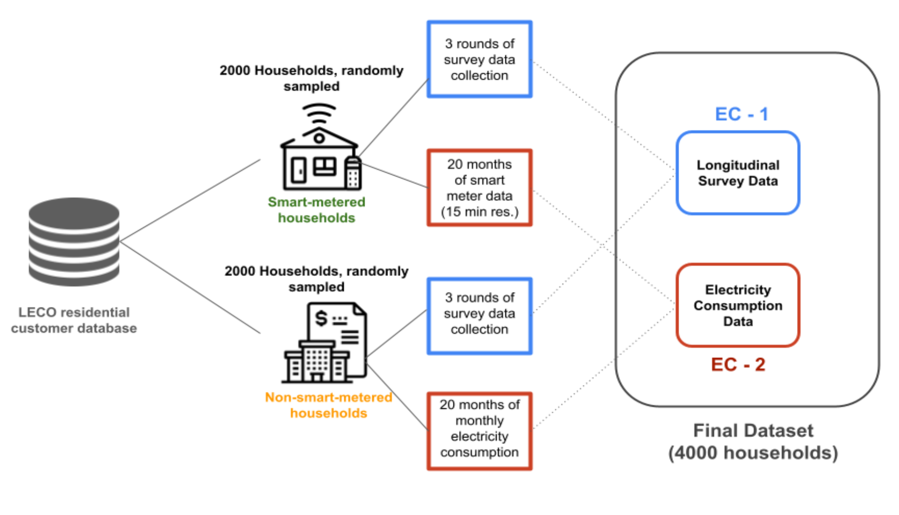

Household electricity consumption dataset (LACUNA)
This repository contains a subset of a larger two-part dataset, combining domestic electricity consumption data with survey responses from the same households. The dataset was compiled with support from the LACUNA Fund.
- EC-1: Data from a longitudinal survey (with 3 rounds of data collection over one year) capturing the drivers,
attitudes and behaviour around domestic energy consumption of over 4,000 consumers of the Lanka Electricity Company
(LECO). These 4,000 consumers will be divided into two primary groups:
- 2000 households with smart electricity meters
- 2000 households with traditional meters containing end-of-month consumption data
- EC-2: Electricity consumption data for a 20-month period for the same 4,000 households on which the survey is conducted. For the smart metered households, this will include detailed electricity profile across different parameters (e.g., power, voltage, current). For non- smart metered households, it will only be end-of-month total consumption.
Dataset Overview
| Data Type | File Name | Description | Data Quality Profiling / Exploratory Data Analysis | Data Dictionary | Download Link |
|---|---|---|---|---|---|
| EC-2 | Smart Meter Data | Household electricity consumption recorded every 15 minutes via smart meters. | Download | ||
| Non-Smart Meter Data | Monthly Household electricity consumption data from households without smart meters. | Download | |||
| EC-1 - Wave 1 | Demographics | Household demographic details collected in Wave 1. | View | Download EC1 Dictionary | Download |
| Household information and history | Information about the household, structure, materials used and history | View | Download | ||
| Appliance Usage | Details on appliance usage patterns in the household. | View | Download | ||
| Room Roster | Information about the rooms in the household | View | Download | ||
| Light Roster | Information about the lights in the household | View | Download | Fan Roster | Information about the Fans in the household | View | Download | AC Roster | Information about the ACs in the household | View | Download | Other | Information about methods of electricity generation at home, water heating and cooking | View | Download |